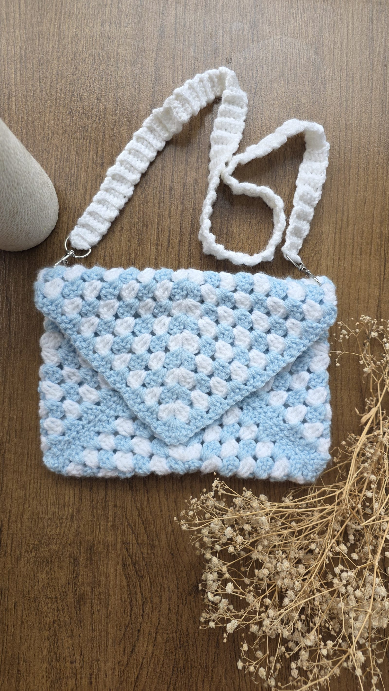

Granny Stitch Crossbody Bag
This began as a book sleeve. I later realised it would work well as a bag by adding a removable crossbody strap. Granny-stitch squares form the envelope flap and body. Finish with a soft woven strap to wear crossbody or on the shoulder. Usually, cotton yarn is the preference for bags as acrylic stretches out-but this was my first trial attempt at a bag, and it turned out great.
You don't need to cut the yarn after every row when changing colours. Instead, you can leave the yarn as is without cutting and start with different colour. By the end of that round just resume with the first colour you started with. See this technique in the video: Watch on YouTube.
Follow these tutorials
Helpful video walkthroughs I used while making this project.
Tools & Materials
Linked below so you can grab the exact ones I used for this project.
This page contains Amazon affiliate links. As an Amazon Associate I earn from qualifying purchases — at no extra cost to you. Thank you for supporting Made with Loops!